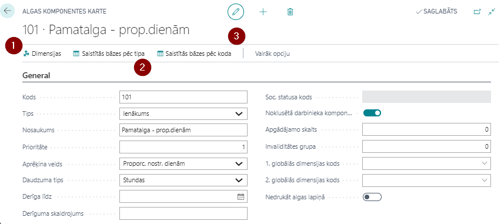
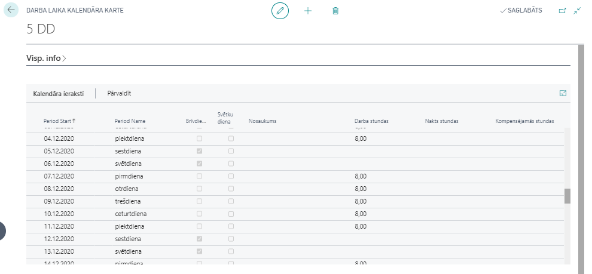
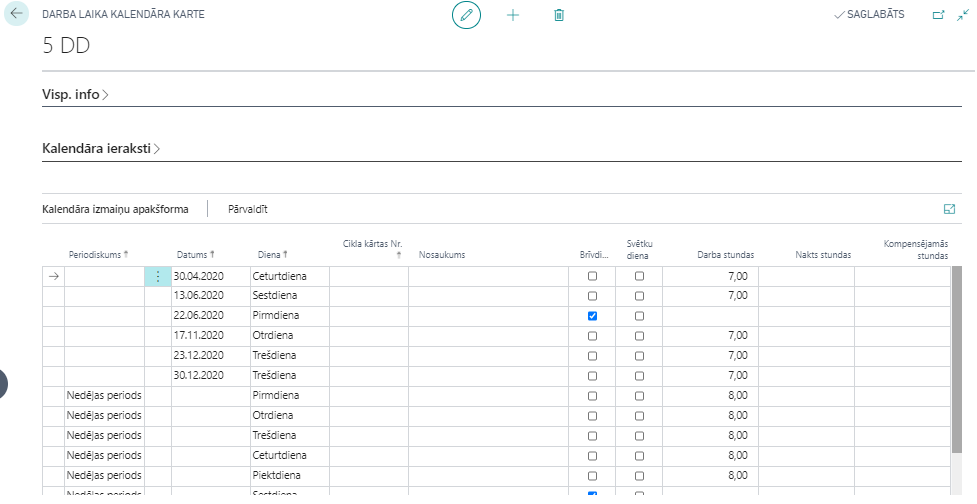
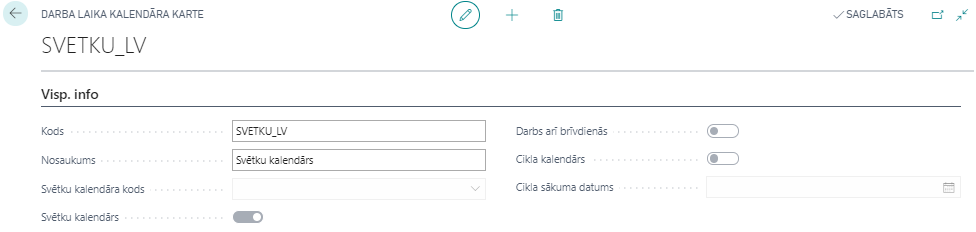
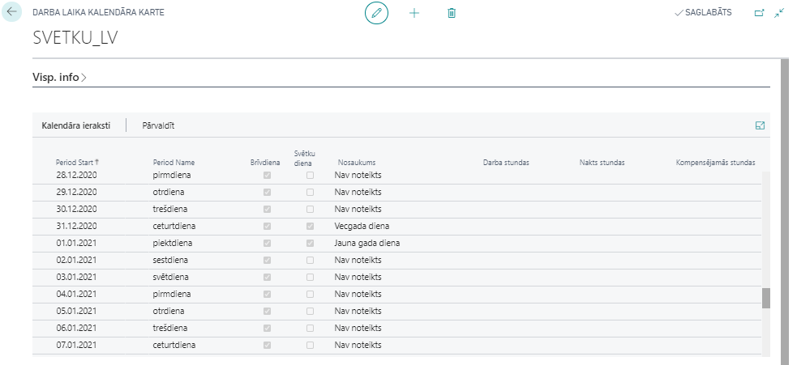
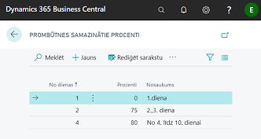

Algas saraksta uzstādījumi
Šajā nodaļā ir apkopoti visi uzstādījumi algu aprēķina vajadzībām.
Algas Komponentes
Algas aprēķins tiek veidots no dažādām algas komponentēm – ienākumiem, atvilkumiem, atvieglojumiem, nodokļiem, utt. Visas komponentes ir apkopotas sarakstā Algas komponentes.
Tip
Parasti lielākā daļa no šīm komponentēm ir kopīga visiem uzņēmumiem un tiek sagatavotas iepriekš, veidojot jaunu bāzi klientam. Tāpēc nav ieteicams šīs vērtības dzēst un modificēt bez konsultācijas ar ELVA konsultantiem.
Katras komponentei ir atsevišķa kartiņa, kurā tiek veikti iestatījumi, un ir iespējams piesaistīt dimensijas  un apskatīt aprēķinu bāzes, kurās konkrētā komponente tiek izmantota, noklikšķinot uz
un apskatīt aprēķinu bāzes, kurās konkrētā komponente tiek izmantota, noklikšķinot uz  un
un 
Cilne: Visp. info

| Lauka nosaukums | Apraksts |
|---|---|
| Kods | Brīvi definēts kods. |
| Tips | Izvēlas no saraksta atbilstošo tipu – Ienākums, Ar Soc.nod.neapl, Ar IIN neapl., Ar nod.neapl., Atvieglojums, Atvilkums, Darba dev.soc.nod., Darba ņēm.soc.nod., Iedz.ien.nod., Izmaksāt, Nepiemēroti atvieglojumi, Riska nodeva. |
| Nosaukums | Brīvi definēts komponentes nosaukums. |
| Prioritāte | Norāda konkrētās komponentes vietu algas aprēķināšanas darbību ķēdē – jo mazāks skaitlis, jo augstāka prioritāte. Tādējādi šī komponente ātrāk tiks iesaistīta algas aprēķinā. Veidojot jaunu algas komponenti, prioritāte iekrīt automātiski, vēlams pašiem bez vajadzības nemainīt. |
| Aprēķina veids | Jāizvēlas, kā komponente tiks rēķināta – Proporcionāli nostrādātām dienām, Proporcionāli nostrādātām stundām, Proporcionāli kalendārām dienām, Stundu, Dienu, Gabaldarbs, Neapliekamais limits (uzkrājošs), Neapliekamais limits (neuzkrājošs), Avanss. |
| Daudzuma tips | Nepieciešams noradīt kādas mērvienības jāizmanto, aprēķinot virsstundas tabelē. |
| Derīgs līdz | Līdz kādam datumam komponente ir spēkā. |
| Derīguma skaidrojums | Brīvi definējams teksts, kurš tiks atspoguļots, aprēķinot algas, kļūdas paziņojumā gadījumā, ja komponente jau nav spēkā. |
| Soc. statusa kods | Norāda pie sociālā nodokļa komponentes atbilstošu sociālā statusa kodu. |
| Noklusētā darbinieka komponente | Atzīme, vai šī komponente aizpildās automātiski, veidojot algas komponentes darbinieka kartiņā. |
| Apgādājamo skaits | Tiek aizpildīts pie atvieglojumu par apgādājamajiem komponentes – ieliek atbilstošo apgādājamo skaitu. |
| Invaliditātes grupa | Tiek aizpildīts pie atvieglojumu par invaliditāti komponentes – aizpilda atbilstošu grupu. |
| 1. globālās dimensijas kods | Ja nepieciešams, norāda 1. globālo dimensiju algas komponentei. |
| 2. globālās dimensijas kods | Ja nepieciešams, norāda 1. globālo dimensiju algas komponentei. |
| Nedrukāt algas lapiņā | Norāda, ka informācija par šo algas komponenti netiks drukāta algas lapiņā. |
| Kase | Izmaksas komponentēm ir svarīga pazīme Kase. Gadījumā, ja alga tiek izmaksāta no Kases, tiek veidota jauna izmaksas komponente ar šo pazīmi. Izmaksas komponentei ar šo pazīme, sūtot informāciju uz kases žurnālu, tiek izmantota funkcija Eksports uz kases žurnālu. Bez šīs pazīmes izmaksai tiek izmantota funkcija Eksports uz maksājumu žurnālu. |
Cilne: Papild. info
| Lauka nosaukums | Apraksts |
|---|---|
| Neto summa | Ievieto atzīmi, ja aprēķinā tiek izmantota neto summa. Gadījumā, ja neto komponentei ir reģistrēta summa ar mīnuss zīmi, šī summa tiks uzskatīta par bruto summu. |
| Virsstundu algas komponente | Norāda piesaistīto Virsstundu algas komponenti. |
| Svētku stundu algas komponente | Norāda piesaistīto Svētku stundu algas komponenti. |
| Nakts stundu algas komponente | Norāda, piesaistīto Nakts stundu algas komponenti. |
| Kompensējamo stundu komponentes kods | Norāda algas komponenti, kura tiek izmantota algas aprēķinā, kompensējot svētku stundas, kuras iekrīt darbiniekam normālajā darba laikā un šajā dienā darbinieks neveica darbu. |
| Gada limita pārsniegtās summas komp. kods | Norāda algas komponentes kodu, kurš tiks izmantots algu aprēķinā gadījumā, ja pārsniegts šīs komponentes limits. |
| Atvieglojumu pieejama summa | Bāze, kura definē atvieglojumu summu dotai komponentei. |
| Nepiemēr. atviegloj. komponentes kods | Norāda algas komponentes kodu, kurš tiks piemērots nepiemēroto atvieglojumu pārnešanai uz nākošo mēnešu algu aprēķiniem. |
| IIN 2. līmeņa komponentes kods | 2. līmeņa IIN bāzes kods. |
| IIN 3. līmeņa komponentes kods | 3. līmeņa IIN bāzes kods. |
| Vienmēr lietot aprēķina periodu | Norāda, ja ir nepieciešams IIN aprēķinam lietot tekošo aprēķina periodu. |
| Dalīt atbilstoši saistītajām komponentēm | Komponentes veidojas no uzstādījumiem (bāzes summām) un dalās atbilstoši komponentēm, kuras ir bāzes summās. |
| Pamatalga | Norāda kura komponente tiek atzīta kā pamatalgas komponente. |
| Svētku dienu apmaksa atvaļ. laikā | ievieto atzīmi pie pamatalgas komponentes, ja vēlas, lai tiktu aprēķināta samaksa par svētku dienām (kuras iekrīt darbinieka darba dienā) atvaļinājuma laikā. Ja atvaļinājuma laikā iekrīt svētku diena, tad sistēma par šīm dienām samazina atvaļinājuma izmantoto dienu skaitu. |
| Svētku dienas brīvdienā vidējā apmaksa | Atzīmējot šo lauku pie pamatalgas komponentes, ja darbinieka brīvdienā “iekrīt” svētku diena, kas pēc valstī noteiktā kalendāra “iekrīt” darba dienā – tad par šo dienu tiek aprēķināta vidējā izpeļņa. Lai par šo dienu aprēķinātu vidējo izpeļņu, darbinieka kartiņā sadaļā Algas komponentes jābūt atzīmei pie Apmaksāt svētku stundas. |
| Netiek grāmatota uz V/G | Norāda, ka atbilstošās komponentes dati netiks grāmatoti uz virsgrāmatu. |
| Algas norēķinu konts | Norāda atbilstošo virsgrāmatas kontu, kurā tiks grāmatoti Norēķini par darba algu. |
| Grāmatošanas grupas konta zīme | Norāda grāmatošanas grupas pusi: debets vai kredīts. |
| Iekļaut nulles summu | Iespējo, ja jāveido algas rindu ar 0 summu (nav iespējas ieturēt summu, bet pastāv iespēja, ka lietotājs koriģēs atvilkuma summu) Ģenerēt rindu vajag , lai būtu iespēja pārskaitīt naudu trešajām pusēm. |
Cilne: Grāmatošana

| Lauka nosaukums | Apraksts |
|---|---|
| Darbinieka grām. grupas kods | Izvēlas no saraksta, uz kuru grupu attiecas šī komponente. |
| Konta tips | Iespējamie varianti : virsgrāmatas konts; piegādātājs vai klients. |
| Konta Nr. | Darba algas konta Nr. izvēlas no saraksta (vai piegādātāju/klientu, ja tips ir piegādātājs/klients). |
| DDSN Konta Nr. | Norāda Darba dev.soc.nod. izmaksu Konta Nr. DDSN var grāmatoties dažādos izmaksu kontos, kas norādīti katrai darbinieka grāmatošanas grupai. |
Cilne: Uzstādījumi

| Lauka nosaukums | Apraksts |
|---|---|
| No datuma | Norāda, no kura datuma šī vērtība ir spēkā. |
| Vērtība | Norāda vērtību, ja tā ir konstanta. |
| Aprēķināt pēc | Norāda vai ievadītā vērtība būs summa vai % |
| Bāze | Ja ir izvēlēti %, tad norāda bāzi, no kuras (bāzes) summas tiks rēķināti %. |
| Bāzes gada summas limits | Tiek norādīts limits, pēc kura pārsniegšanas netiek veikti aprēķini. |
| Nosaukums | Brīvs aizpildāms lauks. |
Bāzes
Bāzes ir uzstādījumi, kuri nosaka dažādu algas sastāvdaļu aprēķinu - atvaļinājumu, slimības naudu, kā arī dažu atskaišu aprēķināšanas algoritmus. Šīs summas var definēt pēc vajadzības.
Katrai bāzei ir sava kartiņa un visas bāžu kartiņas ir apkopotas sarakstā Bāzes.
Cilne: Visp. info
| Lauka nosaukums | Apraksts |
|---|---|
| Bāze | Brīvi definēts kods. |
| Nosaukums | Brīvi izvēlēts nosaukums. |
| Saistītās komponentes kods | Šī funkcionalitāte paredzēta paplašinātai datu filtrēšanai. Ja bāzei tiek norādīts Saistītās komponentes kods, tad no algas komponenšu rindām tiek skaitītas tikai rindas, kur komponentes kods vai saistītās komponentes kods sakrīt ar bāzes summas saistītās komponentes kodu. Saistītai komponentei ir ierobežojumi (PFPIS korektai aizpildīšanai), tāpēc obligāti konsultēties ar ELVA konsultantiem. |
| IIN līmeņa filtrs | Ja ir izvēlēti %, tad norāda bāzi, no kuras (bāzes) summas tiks rēķināti %. |
Cilne: Uzstādījumi
| Tabulas nosaukums | Apraksts |
|---|---|
| + Tips | Norāda komponenšu tipus, kuri tiks pieskaitīti bāzes summas aprēķinā. |
| - Tips | Norāda komponentes tipus, kuri tiks atņemti no bāzes summas. |
| + Kods | Norāda konkrētas komponentes, kuras tiks pieskaitītas bāzes summas aprēķinam. |
| - Kods | Norāda komponentes, kuras tiks atņemtas bāzes summas aprēķinā. |
Papildus katrā tabulā komponentei ir iespējams norādīt datumu, no kura un līdz kuram aprēķinā darbojas attiecīgā komponente vai komponentes tips. Šie dati saglabājas vēsturē.
Darba laika kalendāri
Kalendārs ir visu aprēķinu pamatā. Katrai darbinieka amata kartei ir jāpievieno darba laika kalendāra kods. Kalendārs tiek izmantots darba dienu un stundu aprēķinos, kā arī, lai aprēķinātu plānotās darba dienas un stundas mēnesī, ko izmanto prombūtņu aprēķinos.
Katram kalendāram ir savu kartiņa. Darba laiku kalendāru kartiņas apkopotas sarakstā Darba laika kalendāri. Lietotājs var izveidot papildus kalendārus atkarībā no uzņēmuma vajadzībām. Sistēmas standartpakotnē ir divu veidu darba laika kalendāri: 5 darba dienu un 6 darba dienu. Darba dienām, kurām atšķiras darba stundas (piemēram, pirmssvētku dienas) nepieciešams kalendāros papildināt manuāli ik gadu.
Veidojot jaunu darba laika kalendāra kartiņu, iestatījumiem pieejami sekojoši lauki:
Cilne: Visp. info

| Lauka nosaukums | Apraksts |
|---|---|
| Kods | Brīvi definēts kods. |
| Nosaukums | Brīvi izvēlēts nosaukums. |
| Svētku kalendāra kods | Svētku kalendārs, kas ir piesaistīts konkrētam darba laika kalendāram. |
| Svētku kalendārs | Atzīme, ka šis kalendārs ir svētku kalendārs (tikai svētku kalendāriem). |
| Darbs arī brīvdienās | Atzīmē, ka darbinieki strādā arī brīvdienās. |
| Cikla kalendārs | Atzīme, ja darba laika kalendārs ir veidots kā cikla kalendārs. |
| Cikla sākuma datums | Nodefinē cikla kalendāra pirmo dienu. |
Cilne: Kalendāra ieraksti

Kalendāra ierakstos tiek atspoguļota informācija par katru dienu, ņemot vērā piesaistīto svētku dienu kalendāru. Ja pamata kalendāram virsrakstā ir norādīts Svētku kalendārs, tad visas svētku dienas attiecas arī uz šo kalendāru. Īpašas izmaiņas var izdarīt katrā kalendārā atsevišķi - pārcelt konkrētas darba dienas, saīsināt pirmssvētku dienu stundas, norādot konkrētus datumus. Gadījumā, ja vajadzētu kompensēt svētku dienu, kura iekrīt normālajā darba nedēļā, šo informāciju var reģistrēt cilnē Kalendāra izmaiņu apakšforma.
Cilne: Kalendāra izmaiņu apakšforma

| Lauka nosaukums | Apraksts |
|---|---|
| Periodiskums | Gada periods (parasti izmanto svētku kalendāriem), Nedēļas periods vai Cikls. |
| Datums | Ja nepieciešams, norāda konkrētu datumu (parasti izmanto svētku kalendāriem). |
| Diena | Norāda nedēļas dienas dienu. |
| Cikla kārtas numurs | Ja periodiskums ir Cikls, tad norāda cikla kārtas Nr. |
| Nosaukums | Brīvi izvēlēts apraksts. |
| Brīvdiena | Atzīme, vai konkrētā diena ir brīvdiena. |
| Svētku diena | Atzīme, vai konkrētā diena ir svētku diena. |
Gadījumā, ja svētku diena pārcelta uz citu dienu (piemēram, 18. novembris vai 4. maijs), tad šai informācijai jābūt ievadītai darba laika kalendārā ar tipu Brīvdiena un kompensējamām stundām.
Cilne: Kalendāra gadu apakšforma

Tiek noradīts gads un vidējais stundu skaits mēnesī gadījumam, ja darbiniekam ir summētais darba laiks un pamatalga proporcionāli stundām, tiek ņemts vērā vidējais stundu skaits mēnesī stundas likmes aprēķinam. Šī likme tiek izmantota nakts stundām, virsstundām, svētku stundām, svētku dienu/stundu kompensācijām.
Svētku dienu kalendāri
Sistēmas standarta pakotnē ir izveidots standarta svētku kalendārs ar jau iestatītām svētku dienām, kas atkārtojas katru gadu vienā un tai pašā datumā (piemēram, Ziemassvētki, Jāņi, utt.). Svētku dienas, kuras neatkārtojas vienā un tai pašā datumā (piemēram, Lieldienas, Mātes diena, Vasarsvētki, kā arī, pārceltās svētku dienas), ir jāpapildina manuāli katru gadu.
Cilne: Visp. info
Tiek aizpildīti tikai lauki Kods un Nosaukums, kā arī ielikta pazīme “Svētku kalendārs” . Pārējie šīs cilnes lauki ir neaktīvi, un sistēma tos aizpilda pati.

Cilne: Kalendāra ieraksti

Cilne: Kalendāra izmaiņu apakšforma
Ja svētku dienas atkārtojas ik gadu vienos un tajos pašos datumos, tad periodiskumu izvēlas Gada periods un saliek attiecīgos uzstādījumus. Ja svētku dienas neatkārtojas ik gadu vienos un tajos pašos datumos, tad lauku periodiskums atstāj tukšu.

Prombūtes iemesli
Prombūtnes iemeslu kodu kartiņas apkopotas sarakstā Prombūtne. Koda kartiņu var atvērt uzklikšķinot uz koda un nospiežot rīkjoslā uz pogām Darbības - Jauns dokuments - Karte.

Cilne Visp. info
| Lauka nosaukums | Apraksts |
|---|---|
| Kods | Brīvi definēts prombūtnes kods. |
| Apraksts | Prombūtnes apraksts. |
| Mērvienības kods | Izvēlas no mērvienību klasifikatora. |
| Kopā neierašānās (bāze) | Sistēma uzrāda, cik kopā ir reģistrēta šī prombūtne. Ņemot vērā ka tas ir standarta Microsoft lauks, kurš nav uzturēts, vienmēr rāda nulli. |
Cilne Algas
| Lauka nosaukums | Apraksts |
|---|---|
| Neattaisnota prombūtne | Neattaisnotas prombūtnes pazīme. |
| Algas aprēķina veids | Izvēlas no saraksta, kādā veidā tiek aprēķināta prombūtne: 1. Vidējā apmaksa – aprēķina periodu vispirms ņem iepriekšējos 6 mēn., ja nav, tad iepriekšējos 12 mēn. Ja arī nav, tad programma pārbauda Algu uzstādījumos, vai ir atzīme laukā Lietot tekošo mēnesi vid. apmaksai. Ja šajā laukā nav atzīmes, tad rēķina vidējo no minimālās algas; 2. Saglabāta alga (Cita komponente) – par izvēlēto periodu saglabās aprēķināto pamatalgu, summu izdalot citā algas komponentē; 3. Saglabāta alga – par izvēlēto periodu nekas nemainās pamatalgas aprēķinā (piem: attaisnota prombūtne); 4. Iepr. apmaksa – izmaksā pamatalgu Starpizmaksās par izvēlēto periodu (atvaļinājums uz priekšu); 5. Bez algas – par izvēlēto periodu neaprēķina algu (piem.: bezalgas atvaļinājums, neattaisnota neierašanās); 6. Bez atvieglojumiem – Neaprēķina algu un atvieglojumus (piem.: B lapas); 7. Tukšums – ignorē algās. |
| Algas komponentes kods | Norāda atbilstošo algas komponenti. |
| Nākamā perioda algas komp. kods | Norāda komponenti, ja samaksa par nākamo periodu tiek izdalīta citā komponentē. |
| Kalendāro dienu ierobežojums | Norāda prombūtnes iemesla dienu skaitu (piem. slimības lapas, komandējumi), lai brīdinātu par ierobežojumu pārsniegšanu. |
| Samazināta likme | Norāda samazinātos likmes pa dienām. (Piem: slimības lapas kādā veidā tiek apmaksātas). Klikšķiniet uz lauka linku, lai iestatītu.  |
| Piespiedu kalendāra kods | Izvēlas noklusēto kalendāru, pēc kura tiks veikts aprēķins konkrētai prombūtnei. Atvaļinājumiem ir savs noklusētais kalendārs. |
| Piespiedu kalendāra kods 6DDN | Izvēlas noklusēto kalendāru, pēc kura tiks veikts aprēķins konkrētai prombūtnei pēc sešu darba dienu kalendāra. |
| Lietot kalendārās dienas | Norāda prombūtnes aprēķina veidu pa dienām (periods): - Darba diena; - Kalendārā diena; - Ar roku - dienu skaits nav atkarīgs no perioda. |
| Atvieglojumi aprēķina periodā | Atzīme laukā norāda, ka atvieglojumi būs šajā mēnesī. Ja atzīmes nav, tad tie tiks pārnesti arī uz priekšu. (piem.: gari atvaļinājumi skolotājiem). |
| Iekļaut faktiskajā darba laikā | Ja ir atzīme šajā laukā, tad tiek uztvertas kā faktiski nostrādātās dienas (piem. komandējums). |
| Aprēķina prioritāte | Norāda prombūtnes iemesla vietu algas aprēķināšanas darbību ķēdē - jo mazāks skaitlis, jo augstāka prioritāte. Tās var norādīt gan algas komponentēm, gan arī prombūtnes iemesliem. Ja algas komponente nāk no prombūtnes ieraksta (atval. komp.), tad prioritāte tiek ņemta no prombūtnes iemesla. |
| Vidējā izpeļņa pa stundām | Pastāv iespēja izvēlēties: tukšums, tikai SDL ( summētajam darba laikam), visiem.. |
| Grāmatot uz nākamajiem periodiem | Ķeksis tiek ielikts gadījumā, ja pārejošās prombūtnes nākamā perioda daļa tiek grāmatota uz nākamā perioda izdevumiem. |
| G/U Kods | Norāda brīvi izvēlētu kodu, kas būs apzīmējums šim prombūtnes veidam tabeles izdrukā. |
| Krāsa tabeles izdrukā | Izvēlas krāsu, ar kādu marķētas prombūtnes dienas tabeles izdrukā. |
| Brīvdiena saglabājot darba algu | Tiek izmantota, ja darbiniekam iedota brīvdiena, kura jāapmaksā pēc principa “saglabājot darba algu”, bet neiekļaut faktiskajā laikā (piemēram, donora dienas). |
| Prombūtnes sāk. ziņu kods | Norāda ziņu kodu, kāds tiks atspoguļots atskaitē Ziņas par darba ņēmējiem saistībā ar prombūtnes sākumu. Darbinieka ziņu kods sistēmā aizpildīsies pēc prombūtnes sākuma datuma ievadīšanas. |
| Darba atsākšanas ziņu kods | Norāda ziņu kodu, kāds tiks atspoguļots atskaitē Ziņas par darba ņēmējiem saistībā ar prombūtnes beigām. Darbinieka ziņu kods sistēmā aizpildīsies pēc prombūtnes beigu datuma ievadīšanas. |
Cilne Atvaļinājumi
| Lauka nosaukums | Apraksts |
|---|---|
| Ietekme uz atvaļinājumu | Norāda prombūtnes ietekmi uz ikgadējo atvaļinājumu atlikumu. |
| Atvaļinājuma kompensācija | Atvaļinājuma kompensācijas pazīme. Pielietota Alvaļinājuma kompensācijas koda kartiņā. |